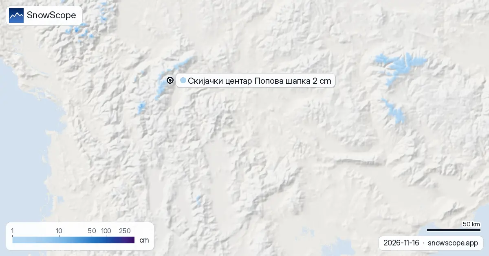

North Macedonia snow: 7 cm coming this week, 19 cm next
North Macedonia's ski mountains face a two-stage winter start. This week will bring up to 7 cm of snow, but the real accumulation arrives next week when 19 cm is forecast to fall between 24 and 30 November.
See the live snow forecast for Скијачки центар Попова шапка in the SnowScope appSnow depth, powder alerts and the 3D map, free.
Two weeks ahead: modest start, then more snow
Water stored as snow across North Macedonia remains scarce for mid-November. Our model covers 15,870 km2 of mountain terrain and shows only 160 km2 currently white, up from just 10 km2 seven days ago. The mountains are still largely dry.
This week (17 to 23 November) will add snow, but gradually. We expect a maximum of 7 cm across the highest slopes. The snowiest single day this week will be 23 November, when 6 cm may fall. The snow line sits at 2,200 m, so only the highest peaks will catch much.
Next week brings the stronger signal. Between 24 and 30 November, our model forecasts up to 19 cm on the high ground. That is nearly three times more than this week, and it matters for mountain water storage as winter begins. Snow will likely accumulate more steadily across the higher bands.
| Resort | Snow depth | New snow, 72 h | Coming, next days | Top |
|---|---|---|---|---|
| Скијачки центар Попова шапка | 2 cm | 10 cm | 0 cm | 2,376 m |
Where snow is falling now
Over the past three days, the Mavrovo mountains have captured the most snow: 37 cm at elevation. This is the standout area right now. The Šar Mountains received 10 cm in the same period, and Pelister 3 cm. These numbers show that altitude and position matter greatly in early November—only the high terrain is catching significant precipitation.
Our model estimates that 90 km2 of mountain area has received at least 5 cm of fresh snow in the past 72 hours. That is real accumulation, but spread thinly across vast terrain. At the resolution we measure, snow depth at 2,000 to 2,500 m averages just 1 cm, with snow cover on 42 percent of that band. Below 2,000 m, the mountains are still bare.
Resorts and the week ahead
Of eight ski resorts across North Macedonia, only one has measurable snow today: Скијачки центар Попова шапка, at 2,376 m, holds 2 cm. It received 10 cm over the past three days and sits at the top of the country's ranking by depth. The next three days will add no fresh snow there—conditions will be static. After 20 November, fresh snow is expected to arrive.
Neighbouring Bulgaria's highest resort, Borovets, currently has 5 cm and faces 9 cm in the next week. Albania's Ski Pista Bigëll shows 0 cm but is forecast 16 cm over seven days. The Balkans are still in early-season mode: snow is patchy, depths are small, and the forecast matters more than today's conditions.
Snow by height: when depth increases
Height is everything now. Between 1,500 and 2,000 m, our model shows zero snow cover. Between 2,000 and 2,500 m, mean depth reaches 1 cm across 42 percent of the terrain. This means that only the high peaks are storing water. Lower slopes are still brown.
As November progresses and storms move in next week, we expect the snow line to lower and the depth in the upper bands to grow. By late November, the 1,500 to 2,000 m band may hold snow, particularly after the 24 to 30 November event. Measurement uncertainty is highest in early season because snow is thin and patchy—rocks or bare ground may lie just beneath the surface.
Looking forward two weeks
North Macedonia's water situation improves slowly. This first week adds modest reserves; the second week is more important for winter accumulation. If the 19 cm forecast for 24 to 30 November verifies, the mountains will hold meaningful snow for the first time this season.
Skiers should monitor the 20 November forecast closely, as that is when the first significant system is timed to arrive. Early-season snow is thin and can conceal rocks or old damage, so caution remains essential. After 20 November, conditions will begin to build toward winter.
Tips for skiers
- Watch the period from 20 to 23 November: the first organized snow event. The Mavrovo mountains and Šar Mountains, which are capturing the most moisture, will likely lead the country.
- Do not trust thin early-season snow completely. Even where our model shows cover, rocks or bare patches may lie close beneath. Stay on-piste and check official avalanche bulletins if you venture off-piste.
- Heights above 2,200 m will receive snow first. Lower slopes will remain dry this week. Plan routes accordingly.
- The real accumulation starts 24 November. If you are planning a trip, the second half of November will offer better conditions than the first half.
About these numbers
Resort snow depths are the deepest snow on the resort's upper slopes from the SnowScope snow model (about 1 km, run of 16 November); they are estimates for an area, not a measurement at one point. Station values are measurements on the date shown. Forecasts can change. Always read the official avalanche bulletin before going off-piste.
Cite this report
For research, teaching or the press: the numbers and charts are free to reuse under CC BY 4.0 with this citation.
SnowScope (2026), North Macedonia snow: 7 cm coming this week, 19 cm next, https://snowscope.app/blog/en/2026/11/north-macedonia-snow-report-16-november-2026.html, accessed 2026-11-16
SnowScope (Atlas Labs). (2026, November 16). North Macedonia snow: 7 cm coming this week, 19 cm next. SnowScope snow reports. https://snowscope.app/blog/en/2026/11/north-macedonia-snow-report-16-november-2026.html
BibTeX
@misc{snowscope2026northmacedoniasnowreport,
author = {{SnowScope (Atlas Labs)}},
title = {North Macedonia snow: 7 cm coming this week, 19 cm next},
year = {2026},
month = nov,
howpublished = {\url{https://snowscope.app/blog/en/2026/11/north-macedonia-snow-report-16-november-2026.html}},
note = {Published 2026-11-16 20:42 UTC; accessed 2026-11-16}
}· CC BY 4.0 · Methods, data and tools →
Скијачки центар Попова шапка: snow and temperature by height, this winter vs last (tools) →
Follow Скијачки центар Попова шапка
Free: a message when fresh snow is coming, and the forecast every morning.
More snow reports

Bogus Basin snow check for Boise skiers on 13 November 2026: no snow on the ground yet, rain and mixed snow this weekend with a snow level near 6,300 to 6,800 ft, then colder air and about 8 in at the summit by next week.

Alpental snow forecast for 13 November 2026: about 1 in on the upper mountain, rain almost to the summit this weekend with a snow level near 5,400 to 5,600 ft, then 4 to 5 in of mixed rain and snow up top next week.